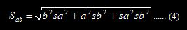

Analisis jalur merupakan perluasan dari analisis regresi berganda. Analisis jalur digunakan jika terdapat variabel mediasi. Penelitian ini menggunakan teknik analisis jalur. Desain penelitian komparatif dapat di lihat pada Gambar 4.1 dan 4.2.
Pada gambar 4.1 variabel X berpengaruh langsung terhadap Y atau sering disebut direct effect, sedangkan gambar 4.2 menggambarkan bentuk mediasi sederhana yaitu ada pengaruh tidak langsung X ke Y, lewat M sebagai variabel mediator. Hubungan sederhana antara X dan Y, lewat M sebagai variabel mediator. Hubungan X dan Y sering disebut total effect (Pengaruh Total) dengan nilai koefisien total c pada gambar 4.1. Koefisien c ini berbeda dengan koefisien c’ , koefisien c’ merupakan koefisien pengaruh langsung (direct effect) X ke Y setelah mengendalikan M (Gambar 4.2).
Mendeteksi pengaruh mediasi secara langsung dengan melihat model gambar 4.1. Berdasarkan gambar 4.2 dapat ditulis persamaan regresi sebagai berikut :
Variabel M disebut mediator atau intervening jika persamaan (1) X secara signifikan mempengaruhi Y ( atau c ≠ 0), persamaan (2) X secara signifikan mempengaruhi M ( atau a ≠ 0) dan persamaan (3) X secara signifikan mempengaruhi Y dengan mengkontrol X (b ≠ 0). Jika pengaruh X terhdapa Y menurun menjadi nol dengan memasukan variabel M, maka terjadi mediasi sempurna.
Namun demikian, jika pengaruh X terhadap Y menurun tidak sama dengan nol dengan memasukan variabel M, maka terjadi mediasi parsial. Mediasi sederhana ini terjadi jika dipenuhi asumsi (1) tidak ada kesalahan pengukuran pada pada variabel M, dan (2) variabel Y tidak mempengaruhi M.
Pengujian hipotesis mediasi dapat dilakukan dengan prosedur yang dikembangkan oleh sobel (1982) dan dikenal dengan uji sobel (Sobel Test). Uji sobel dilakukan dengan cara menguji kekuatan pengaruh pengaruh tidak langsung X ke Y lewat M. Pengaruh tidak langsung X ke Y lewat M dihitung dengan cara mengalikan jalur X ─ M (a) dengan jalur M─Y (b) atau jalur ab. Jadi koefisien ab = ( c’ – c), dimana c adalah pengaruh X terhadap Y tanpa mengontrol M, sedangkan c’ adalah koefisien pengaruh X terhadap Y setelah mengontrol M. Standar error koefisien a dan b ditulis dengan Sa dan Sb dan besarnya standar error tidak langsung adalah Sab yang dihitung dengan rumus :
Ket:
Sa = standar error koefisien a
Sb = standar error koefisien b
b = koefisien variabel mediasi
a = koefisien variabel bebas
Untuk menguji signifikan pengaruh tidak langsung, maka kita perlu menghitung nilai t dari koefisien ab dengan rumus :
Nilai t hitung dibandingkan dengan nilai t tabel. Jika nilai t hitung > nilai t tabel maka disimpulkan terjadi pengaruh mediasi.
Sobel test menghendaki asumsi jumlah sampel besar dan nilai koefisien mediasi berdistribusi normal. Tetapi asumsi ini telah banyak dikritik. Menurut Bollen dan Stine (1990) pada sampel kecil distribusinya umumnya tidak normal.
Imam Gozali (2013: 248-255)